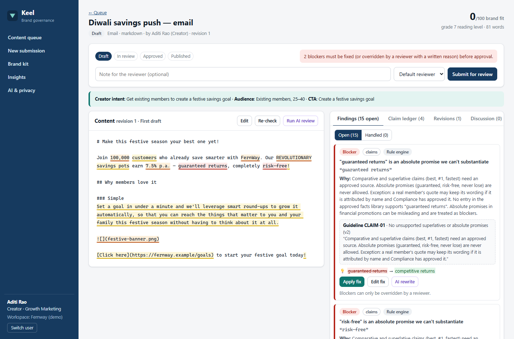
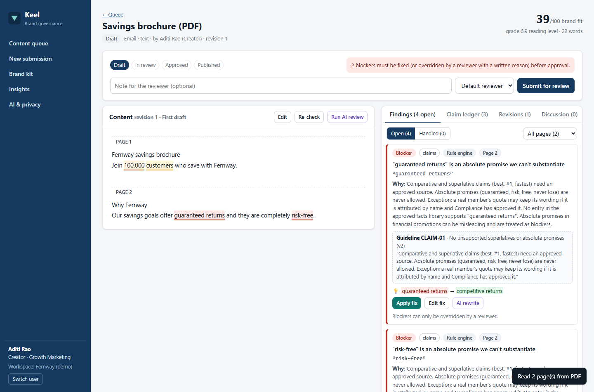
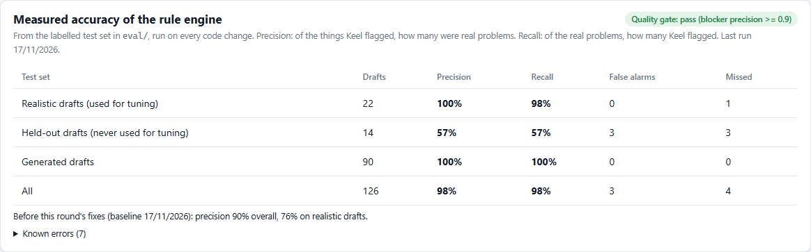
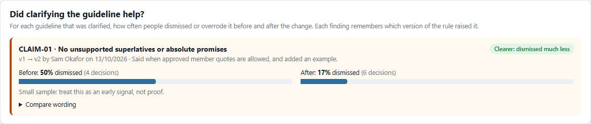

CodeZen India · Inkloom AI problem statement · Round 2: The Build
A working tool that checks marketing content before it is published. You put in a post, an ad, an email or a document. Keel checks it against the brand's rules, approved facts, words and colours. Every problem comes back with the rule it breaks and a suggested fix, and a person makes the final approval.
| Team name | Grinders |
| Team leader | Shivani Jogiya |
| Team member | Ansh Jerath |
| Live app | (add the live link here) |
| Source code | (add the repository link here) |
| Date | 17 November 2026 |
Contents: 1 What Keel does · 2 How to try it · 3 Completed features · 4 How it is built · 5 Results we measured · 6 Changes from our Round 1 plan · 7 Three improvements for Round 3 · 8 Known limits · 9 Team and disclosures
Companies publish content written by many people: their own marketers, agencies, freelancers and AI tools. The brand rules sit in a PDF that nobody reads while writing, and approved numbers go out of date. So small mistakes slip through: old figures, promises like "guaranteed returns", images with no description, and mentions of products that have not been announced.
Keel checks every piece before it goes out:
Open the live link. The sign-in screen shows four people from a made-up company called Fernway. Click a name to sign in as that person. The same steps are listed on the sign-in screen and in a "Try this" box after signing in.
| Sign in as | What to do |
|---|---|
| Aditi (writer) | Open "Diwali savings push". Click an underlined phrase to see the rule and the fix. Click "Apply fix" on the outdated rate (7.5%); Keel then asks for the required warning text. Click "Submit for review". |
| Priya (reviewer) | Open "Diwali referral SMS". "Approve" is locked because a blocker is open. Override it with a written reason, or click "Request changes". |
| Sam (brand admin) | Open "Insights". Click "Clarify this guideline" on the unclear rule, see "Did clarifying the guideline help?" and "Measured accuracy". Open "Brand kit" to edit rules and approved facts. |
| Marcus (agency) | Open "App rating social post": the unannounced product is blocked. In "Brand kit", secret items are hidden from agency accounts. |
| Anyone | Click "New submission" and paste your own text, or upload a PDF, PowerPoint, Word file or image. Problems appear as you type. |
Everyone shares one demo. The "Reset demo data" button on the sign-in screen puts it back to the start. The free hosting plan sleeps when nobody uses it, so the first visit can take about a minute to load.

Everything below works in the live app from start to finish.
| Feature | What works now |
|---|---|
| Brand kit | Rules with versions and a change history; approved facts with source, valid dates, old values and required warning text; colours, fonts, logos and standard text; a list of secret terms. Admins can paste a style guide and get suggested rules to approve. |
| Content intake | Paste text, Markdown or HTML; upload Word (.docx), PDF and PowerPoint (.pptx); attach images. Text inside images can be read with OCR and checked too. |
| Rule checks (17 types) | Preferred words, brand-name spelling, jargon and hype words, too many exclamation marks, shouting in capitals, every number against approved facts (out of date, expired, wrong, no source), promises such as "risk-free", missing warning text, secret terms, reading level, image descriptions, link text, heading order, colour contrast, brand colours and length limits per channel. |
| AI checks (optional) | Google Gemini checks tone, key messages, calls to action, hidden claims and images, and writes fixes that keep the writer's meaning. Secret words are hidden first, and each AI finding must quote the real text and name a real rule, or it is thrown away. |
| Explained findings | Each problem shows what, why, the rule or fact (with ID and version), a before and after fix, rule or AI, confidence, and the page or slide it is on. |
| Human decisions | Apply a fix (makes a new version), edit it first, or reject it with a reason. Only reviewers can override blockers, with a written reason. Decisions carry over to later versions. |
| Approval flow | Draft → In review → Changes requested → Approved → Published, with four roles, comments, version comparison and a full audit log. Writers cannot approve their own work. Editing approved content sends it back to review. |
| Claim list | Every number and claim with its result and the approved fact it was checked against. |
| Insights | Problems over time, top mistakes, coaching suggestions, unclear rules, a "clarify this guideline" flow with before and after results, and measured accuracy. |
| Privacy and AI page | Plain-language explanation, a switch to turn AI off for everyone, and a log of every AI call (no content stored). |
| Demo helpers | Step-by-step guide on the sign-in screen, a "Try this" box for each role, a draft already waiting for the reviewer, and a "Reset demo data" button. |

| Part | Choice | Why |
|---|---|---|
| Website | React 18 with Vite | Interactive screens for highlighting, live checks and version comparison. |
| Server | Node.js 24 with Express | One language for the whole app, which suits a 2-person team. |
| Database | SQLite built into Node.js | No database server to run. The whole database is one file. |
| AI | Google Gemini through the official @google/genai SDK, with JSON answers checked by zod | The team has Gemini access. Structured answers can be checked by code. The app works without it. |
| Documents | mammoth (Word), pdf.js (PDF), jszip (PowerPoint) | Read documents on our own server. |
| Text in images | Tesseract OCR with the English model bundled | Runs on our server, so images are not sent anywhere for this. |
| Testing | node:test, a headless-browser script, a labelled accuracy test set | 48 automated tests, an 18-step browser test, and an accuracy check on every change. |
| Hosting | Render (free plan), GitHub Actions | Public link with no setup; tests run on every push. |
We built a labelled test set of 126 drafts with 167 known problems. Precision means: of the things Keel flagged, how many were real problems. Recall means: of the real problems, how many Keel found.
| Test set | Drafts | Precision | Recall |
|---|---|---|---|
| Realistic drafts, before our fixes | 22 | 76% | 96% |
| Realistic drafts, after our fixes | 22 | 100% | 98% |
| New drafts written after the fixes (never used for tuning) | 14 | 57% | 57% |
| Generated drafts (easier) | 90 | 100% | 100% |
| Blocker-level flags, all sets | 126 | 100% | 100% |
The test set found real false alarms that we then fixed: dates, phone numbers, durations and example amounts were being treated as statistics, and "the best way to start" was treated as a product claim. The 100% after fixing is partly because we tuned on those drafts, so we wrote 14 new drafts afterwards. On those, Keel scores 57%. That is our honest estimate for new content, and it shows four gaps we will fix in Round 3. Blocker flags (impossible promises and leaks) were right every time.

We ran every AI feature against the real Gemini service: AI review, rewrite, image review and style-guide import. Our 8 labelled AI cases cover fear-based or guilt-tripping lines, competing calls to action, and messages that go against the brand's key promises. With our default model, gemini-3.1-flash-lite, the AI found all 5 real problems in each of 4 runs. Its precision was 83%, 83%, 100% and 100%: in two runs it raised one extra flag about calls to action. Eight cases is a small sample. Live testing also found problems we fixed: JSON answers need Gemini's v1beta API, a busy or exhausted model now falls back to another model, and AI findings that repeat a rule-engine finding are removed.
In the demo data, a rule about claims was dismissed 50% of the time (4 decisions). After the brand admin clarified when approved member quotes are allowed, it was dismissed 17% of the time (6 decisions). These numbers come from made-up demo data and only show how the feature works; real numbers will come from real use.

| Round 1 plan | What we did | Why |
|---|---|---|
| AI by a different provider | AI by Google Gemini | Our team has access to the Gemini API. The safety design (hide secrets, check every AI answer, log every call) did not change. |
| Three improvements spread over Rounds 2 and 3 (accuracy test set, guideline loop, more formats) | All three are built in Round 2 | The core flow came together early, so we finished them now. Section 7 lists three new improvements for Round 3. |
| Text in images by "OCR or AI vision" | OCR on our own server (Tesseract) | Images stay private, and it works without an AI key. |
| About 100 labelled drafts | 126 drafts in three groups, including drafts never used for tuning | After fixing false alarms we scored 100%, which we did not trust. A separate untouched set gives an honest number. |
| 6 to 8 user interviews in the first week of Round 2 | Not done yet; moved to Round 3 | We put the time into making the product work end to end. |
| Docker container on Render | Render's Node.js service (Docker file kept) | Simpler and faster to deploy on the free plan. |
| Not planned | Guide on the sign-in screen, "Try this" box, a draft waiting for the reviewer, "Reset demo data" | Judges must be able to use the app without help. |
| Name | Position | Work in Round 2 |
|---|---|---|
| Shivani Jogiya | Team leader | Frontend, user experience, demo guide, testing, documentation |
| Ansh Jerath | Team member | Backend, rule engine, document and OCR intake, Gemini integration, accuracy test set, hosting |